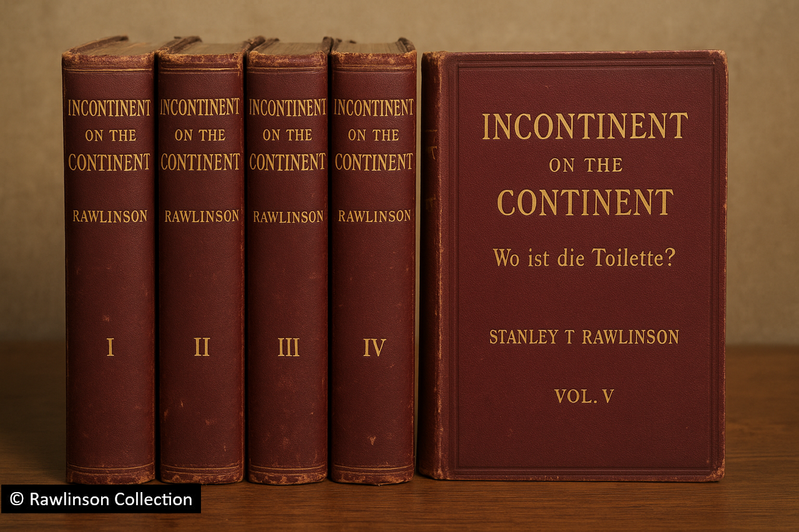
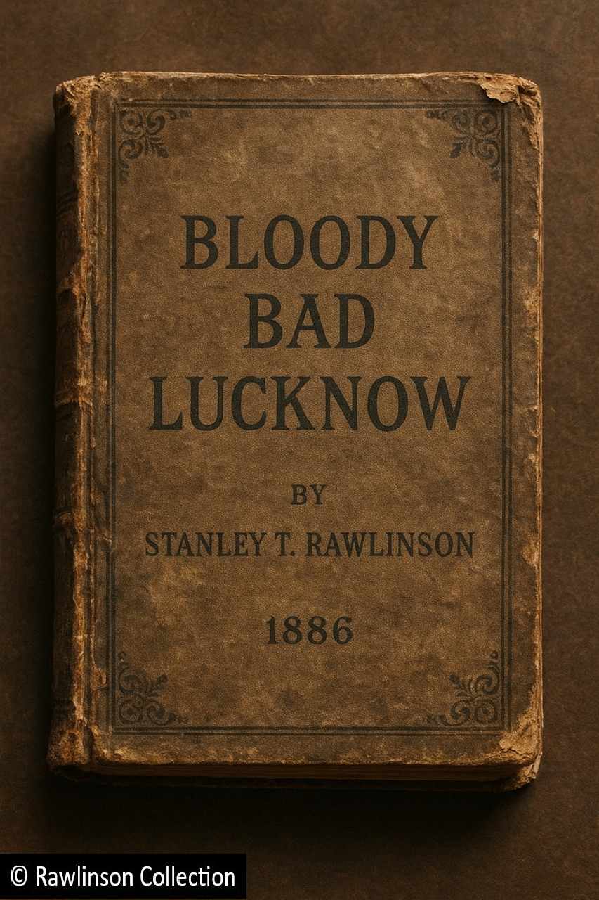
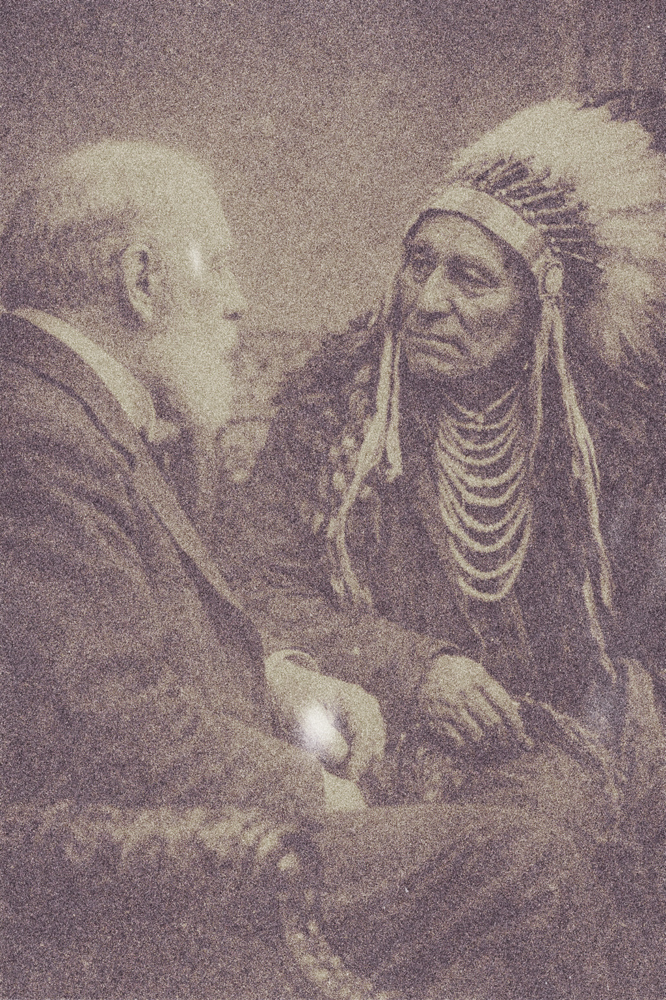
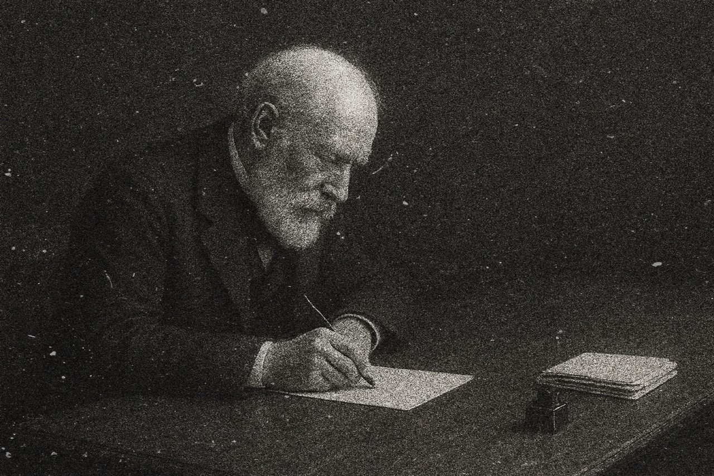

1880s: Travels & Feuds

Stanley in 1889
As the 1880s dawned, Sir Stanley Rawlinson entered his sixty-sixth year. With characteristic self-awareness, he chose this period to withdraw — at least partially — from the demands of public life, turning his attentions instead toward writing, travel, and academic inquiry. Yet even in semi-retirement, Sir Stanley remained ever the statesman, using his formidable network of parliamentary contacts to press for what he often referred to as "common sense in public policy."
The Redcoat Controversy (1881)
One of his most notable interventions came in January 1881, when he wrote to Hugh Childers, the Secretary of State for War, warning of the "tactical disadvantage" posed by the bright scarlet uniforms of the British infantry. When his letter went unanswered, Sir Stanley ensured its publication in The Times:
"… that it cannot be argued that the British infantryman is not placed at a severe tactical disadvantage compared to his more conservatively dressed Boer adversaries in the dusty arid plains of the Transvaal. To that end, I would recommend at least a temporary retirement of the (albeit extremely flattering) scarlet and white livery of our unfortunately rather conspicuous soldiery…."
The Anglo-Egyptian War (1882)
In December 1881, Prime Minister William Gladstone once again sought to draw Rawlinson into diplomatic service as tensions in Egypt mounted. Despite the gravity of the situation, Sir Stanley declined, citing his mistrust of both Gladstone and Lord Granville. He accused the government of exaggerating the threat posed by the Urabi revolt:
"It is my firm and fundamental belief that the Urabi forces pose no more threat to the control of the Suez Canal than does my 9-year old grandniece armed only with her skipping rope and winning smile!"
Nevertheless, he could not resist offering unsolicited (and typically forthright) advice on the Empire's strategic approach:
"…I would suggest the prudent deployments in a military capacity of some of the most recent civilian innovations. Use the telegraph for rapid communications; deploy railway engineers to facilitate rapid transit of troops and munitions; make battlefield use of new developments in postal services. These technologies would all give the empire a strategic advantage. Court the French to enter a naval alliance (and hope they turn up for a change) and bombard fourteen shades of buggery out of the port of Alexandria. And for God's sake change those ruddy red uniforms!"
First Publications (1882–1884)

Down and Out in Tashkent and Jellalabad (1882)
In 1882, Rawlinson published his first major work, the autobiographical Down and Out in Tashkent and Jellalabad, recounting his travels in Central Asia during the 1830s. Vanity Fair described it as "a thrilling account of the adventures of a young gentleman freed of the shackles of conformity and unburdened by his duty to establishment." Though critically praised, it sold modestly.

Incontinent on the Continent (1882)
Later that year, he released a far less conventional work — his academic monograph Incontinent on the Continent – Wo ist die Toilette?, a five-volume treatise on "the provision of public lavatorial and ablutory facilities across the European continent." Despite its scholarly ambition, it too found few readers; extant copies now reside only in the British Library, the Bodleian Library, the private library of the Duke of Devonshire, and of course a handful of copies in the Rawlinson Collection.
The Berlin Conference (1884)
When the government sought his participation in the Berlin Conference of 1884, Rawlinson again refused, denouncing the partition of Africa in typically fiery language:
"The defacto carving up of the continent by a collection of scavenging ailing empires, presided over by that cantankerous Teutonic walrus [Bismark] ignores one undisputed voice around the table. The people of Africa themselves… Her Majesty should consider boycotting the whole damned cake and arse party!"
He further argued that European powers were ignoring the moral imperative to end the slave trade, prioritising resources and dominance in a "shameless scramble", echoing the humanitarian sentiments of his friend Dr. David Livingstone.
A Scholar's Diversions (1885–1886)

A Brief Interruption (1885)

Look Uzbek in Town (1886)
The mid-1880s saw Sir Stanley's scholarly energies directed toward linguistics. In 1885, he published the three-volume monograph A Brief Interruption: The Glottal Stop in Pashtu Phonology, followed by Look Uzbek in Town (1886), a study of urban Uzbek slang. These tomes are almost unreadable to the general public, but gained the attentions of the philologists and notables of the Royal Society, of which his cousin Henry was a leading member. This earned him nomination as a Fellow of the Royal Society, recognised for his "outstanding contribution to the understanding of subcontinental dialectic and grammatical discrepancies."
Memoirs and Literary Feuds (1886)

Vanity Fair caricature, 1886

Punch, 1886
That same year, he released Bloody Bad Lucknow, a sequel to his earlier memoir. Critics noted that his "propensity for verbosity" limited its popular appeal, though Vanity Fair nonetheless featured a celebrated caricature of the 72-year-old author. When asked whether he would pen a candid memoir of his years in Parliament, he demurred:
"It would be ingracious and, frankly, poor form, to seek to dish the dirt on parliamentary colleagues…"

Bloody Bad Lucknow
Soon after, he reignited public interest through his pen — this time in the satirical pages of Punch, where he denounced the aspiring populist politician Nathaniel Frottage as a "lickspittle" and "toady… whose precocious flapping head and bulbous ranine eyes, would surely give all right-minded Englishmen cause to belt him about the chops with anvil." Frottage was engaged in a tour of the Untied States, seeking to influence President Grover Cleveland to support his political ambitions.
An American Odyssey (1886–1889)

Arriving in New York, 1886
Determined to counter Frottage's political ambitions abroad, Rawlinson embarked for the United States in late 1886. Accompanied by his friend and photographer Charles Ratman, the trip lasted nearly two years and produced one of the earliest visual records of his travels. Upon arrival by steamer in New York, he remarked dryly of the Statue of Liberty:
"A true engineering marvel, not just the greatest work of a Frenchman, but far too impressive to be left to the Americans."

Ida Simmons' Female Mastodons
During his stay, Rawlinson maintained his reputation for charm and scandal — reportedly conducting amorous liaisons with a reported 20 members of Ida Simmons' Female Mastodons burlesque troupe. His travels extended across the continent, including meetings with Native American tribes in the Southwest, where he was deeply moved by their plight under U.S. assimilation policies.

Monument Valley, American Southwest

President Grover Cleveland
Stanley secured a meeting with President Cleveland for himself, and by all accounts took the opportunity to lecture the President on the risks that offering any support to Frottage could be misinterpreted as interfering in the British political process. We can only assume that this message landed, because much to Frottage's chagrin, Cleveland never endorsed his political aspirations, and Stanley's "lickspittle" soon thereafter disappeared into obscurity. Shortly thereafter however, relations between the two men deteriorated sharply after Rawlinson's unsparing critique of U.S. racial policy:

Chief of the Lakota Sioux 'Squatting Bear'
"Whilst I have come to find the superficial bonhomie of your compatriots a generally welcome trait, I find myself deeply concerned by the undercurrent of deep division and racial animosity that runs as an undercurrent through all things in this country. Animosity that will only be exacerbated by the actions of your administration.
The legislation that your government seeks to impose upon the Indians surely feels like an abhorrence towards a people whose only crime was to be here first… I fear that unless the United States can develop a more mature and sensible approach to multiculturalism, the inevitable consequences could be dire."
Cleveland's response—if any—was unrecorded, but the feud endured for life. In his later poetry, including the epic America is Wasted on the Americans and the satirical The Orange Man, Rawlinson took repeated aim at Cleveland and American society at large.
Return to England and the Naval Defence Act (1889)

Stanley writing in 1889

Naval Defence Act letter
Sir Stanley returned to England in February 1889, aged 74, greeted by his ever-patient wife and a renewed enthusiasm for public engagement. That same year, he voiced strong support for Lord Salisbury's Naval Defence Act, declaring in The Times:
"If Britannia ever wishes to truly ensure that she rules the waves, she needs to invest… even were [the Tsar] to find himself unexpectedly allied with the French! Which although it might seem an unlikely prospect at the present time, cannot be ruled out, because well, you know what they're like!"